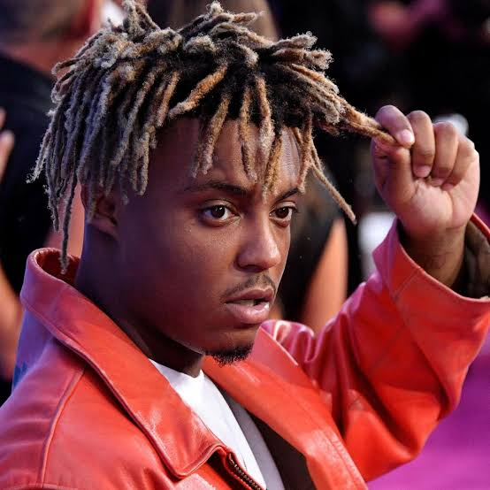

Juice Wrld

A photo of Juice Wrld
This is a tribute page to Juice Wrld.
Jarad Anthony Higgins, known professionally as Juice Wrld, was an American rapper, singer, and songwriter. He was a leading figure in the emo rap and SoundCloud rap genres which garnered mainstream attention during the mid-to-late 2010s.
More About Juice Wrld
| Born | Died |
|---|---|
| Jarad Anthony Higgins | Jarad Anthony Higgins |
| December 2, 1998 | December 8, 2019 |
| Chicago, Illinois, U.S. | Oak Lawn, Illinois, U.S. |